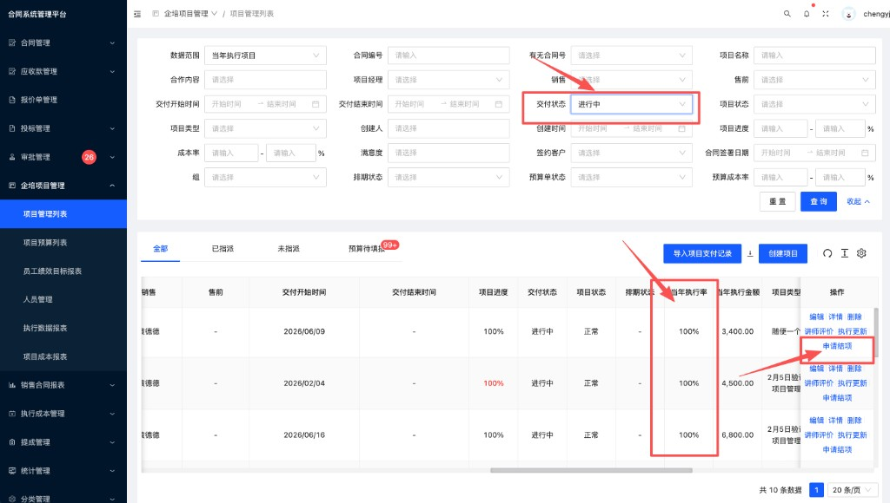
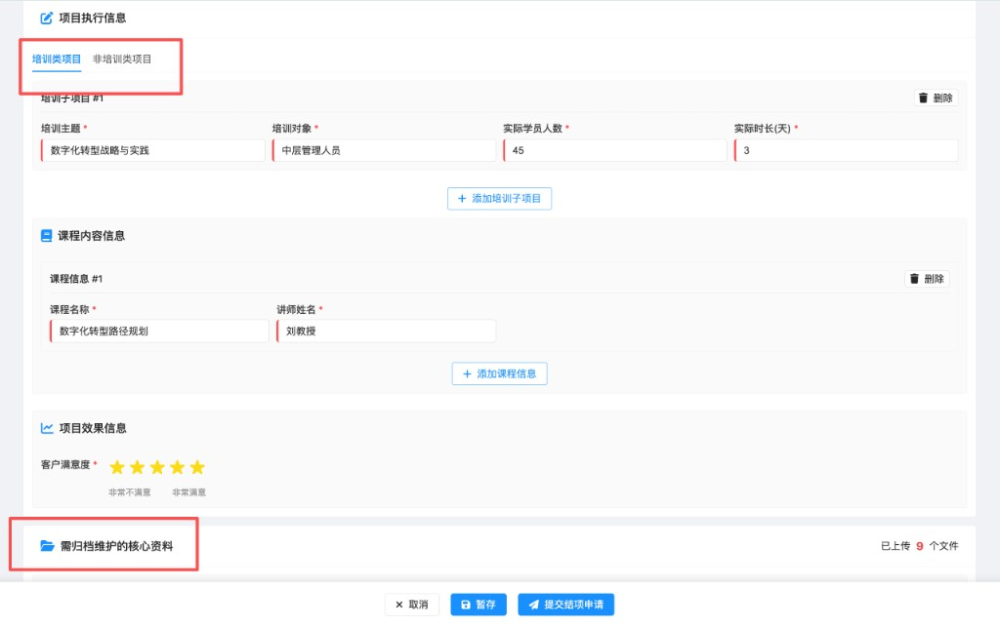
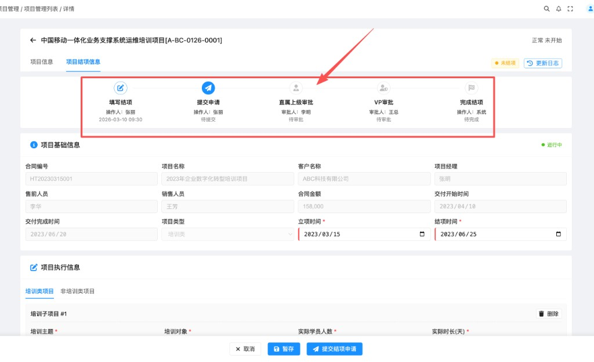
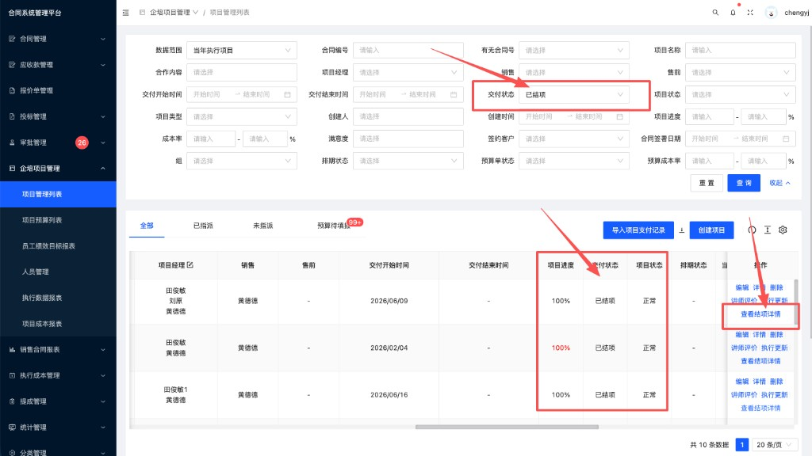
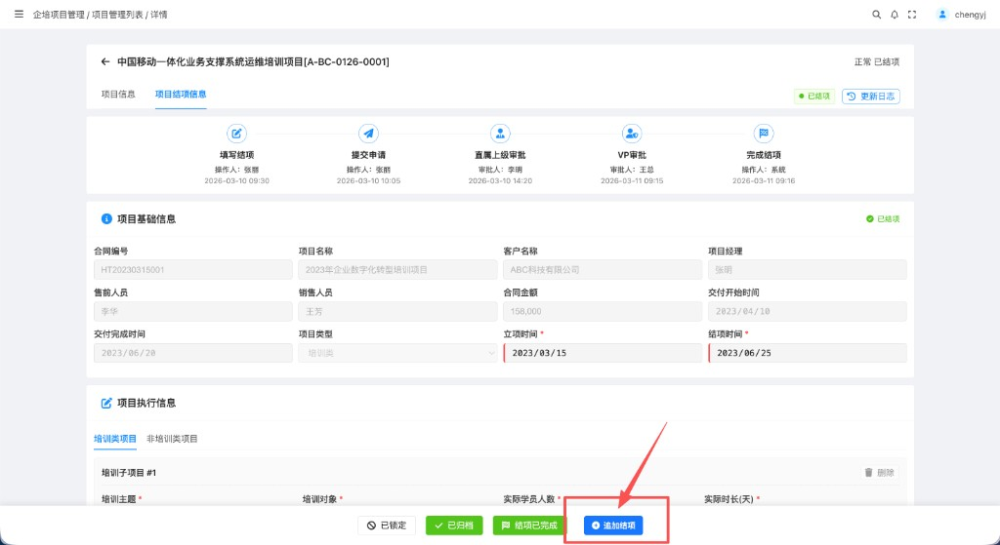
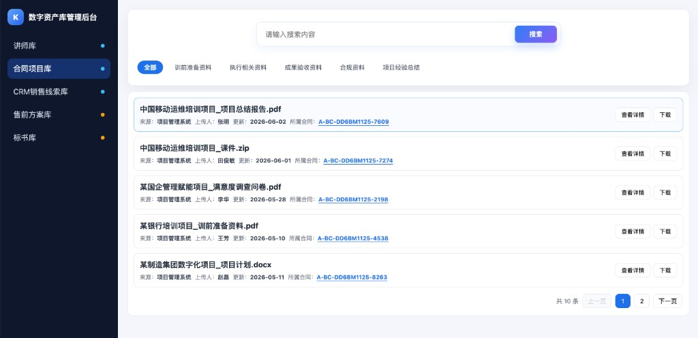

流程从执行单完成开始，到资料归档复用结束，形成管理闭环；
异常拦截：对达到结项条件但未进行结项的项目，系统将实行强管控阻断。
每次执行单录入完成后，系统记录本次执行金额和执行时间。
系统判断执行金额是否等于合同金额，或是否已半年未再次执行。
满足最终结项或阶段性结项条件后，系统提醒项目负责人采集结项资料。
项目经理选择培训类或非培训类，系统据此展示必填资料清单。
项目负责人按清单上传资料，支持多次补充和追加结项。
系统校验必填项，直属上级和 VP 审核资料是否齐全、真实、分类正确。
审核通过后资料入库，同时纳入主管季度统计和后续业务复用。
逾期未结项系统自动拦截：锁定项目经理新项目执行权限并扣除绩效；销售强制剔除提成计算。
结项的核心目的是将高价值资料沉淀为数字资产。当前面临项目经理动力不足、触发时机不清等难点。
明确为什么要结项，梳理结项的业务核心价值。
结项动作常被忽略，且未结项对绩效、复盘、项目关闭的影响不明确。
合同金额与执行金额不一致时长周期项目无法结项，导致资料积压。
审批节点多，各角色审核重点不清，容易造成流转效率低下和标准不一。
资料标准不一，上传时存在漏传或分类错误风险。明确各类别归档要求，作为系统强制校验与人工审核的依据。
系统根据项目类型自动展示必填资料，限制漏传。以下为培训类项目的归档要求明细：
由项目经理补充合作内容、交付成果、验收标准。可上传合同约定成果、验收记录、项目总结等结果性资料。
资料支持多次补充和追加结项。课件、照片等大文件需支持压缩、转 PDF 或断点续传等处理方式。
业务、VP、财务的角色审核边界需要清晰界定。
归档资料不仅要“存”，更要“用”。需要建立便于检索、多角色受益的流转闭环。
资料分散，无法做到可查、可看、可下载、可复用。
不知道归档资料能给不同岗位的同事带来什么具体帮助。
围绕问题解决方案，系统侧需要落地以下功能能力。
结合前述业务与系统规划，展示项目结项归档线上落地的标准动作流转。
改变过去靠人工记忆和催促的模式，系统根据执行金额和项目周期，自动向项目负责人发送结项办理通知。

业务人员进入结项页面，由系统根据类型进行必填项校验并限制漏传。

资料提交后进入审批环节，明确各节点职责，杜绝责任不清。

审批通过后，项目状态正式落定。主管可在季度统计中查看到该项目完成闭环。


结项不等于项目结束，高价值资料将在统一的管理平台上复用。
